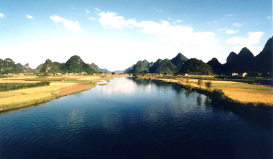

在山水甲天下的阳朔，有这样一条可以与漓江相媲美的河流，它就是素有“小漓江”之称的遇龙河。遇龙河河源自阳朔近邻之临桂县的古里河，它流经阳朔县的金宝乡、葡萄镇、白沙镇、新阳朔镇和高田乡，最后与金宝河相交汇于青厄渡，并一同流入下游的田家河。美国哈佛大学著名景观专家卡尔博士在徒步考察完遇龙河风景之后曾这样感叹道：“这是我在中国看到的最美丽的地方”。

【游遇龙河指导】
如果说从桂林到阳朔的桂阳公路是一条黄金走廊，那么白沙镇可以说就是这条走廊上的一颗耀眼的明珠。因为在这里尚有许多资源有如养在深闺的淑女，有待开发利用。
仅遇龙河景区就有牛望月、穿岩古榕、双流美景、夏棠佳胜、大小五指山、狮子山、八仙岩、古墓群、归义县旧址等。
从富里桥、遇龙桥到珠头山、潘庄，顺流而下，少则1天，多则3天可游览完。人们可以徒步走过仅漫过脚面的水堤，可以在古树下的石板上坐着谈天，可以考察极具特色的古建筑，可以到山寨村民家中作客……徒步游览，亲近自然，感受山水风光赋予的无限旖旎，领略纯朴民风带来的乐趣，让游客留恋往返，赏心悦目。
恬静的遇龙河风光
（一）柔情似水遇龙河
遇龙河是阳朔仅次于漓江的第二大河流。发源于临桂县古里河，流经阳朔三乡镇三十余个村庄，沿桂（林）阳（朔）公路走向缓缓南流。至穿岩古榕景区青厄渡口处与金宝河汇合后流入漓江。遇龙向全长43.5公里，宽约38—61米，深0.5—2米长年河水清澈，水流缓慢。正常流量约每秒5立方米。河中筑有多处堤坝；不通航。遇龙河素有“小漓江”之称，是阳朔县部分重点文物古迹和主要田园山水风景所在地。近年来兴起的徒步旅游，使“锁在深闺”的遇龙河终于掀起了她的“红盖头”游客们对其朴素原始的自然风光、文物古迹赞不绝口。美国哈佛大学博士、世界著名园林专家卡尔，在徒步考察了遇龙河风景后激动地赞叹道：在中国看到了最美丽的地方！
遇龙河的水太清澈了！久居都市的人们，只要走近她，一股浓浓的欲罢不能的亲近感就会油然而生，恨不得立即跳进河里与她溶为一体。温柔平静的江面没有半点，涟漪。鱼儿在墨绿色的水草间穿梭，在褚红色的卵石上嬉戏，蓝天白云，日月星辰，都会清清楚楚映入水中，偶有渔翁的竹筏驶来，人们或许分不清他是在天上还是在人间？遇龙河畔的景色太秀美了！山岭起伏，气象万千，恰如龙飞凤舞；阡陌纵横，稻黄果香，仿佛世外桃源……身临其境，安然自得，其乐融融的气息溢满着人们的身心，难怪古人把遇龙河称之为“安乐水”。
遇龙河两岸山峰清秀绮丽，连绵起伏，形态万千，江岸绿草如茵，翠竹葱郁，树木繁荫。遇龙河的水如同 绿色的翡翠，清澈透亮，鱼儿闲游，水筏飘摇，一一可见。微风拂过水面，泛起阵阵涟漪，如同小提琴奏出的音符，静静的，轻轻的。它是那样的纯洁，天生丽质，不为废水、废气污染，没有世俗尘埃玷污。立于江岸之上，任清风拂面，任清流洗涤自我的灵魂，一切烦扰便会释然，随之而来的平静、豁达，心理得到一种惬意的慰藉。遇龙河，宛如一位文静的少女，迈着轻盈的步子，飘然而过。这真是：水映峰来峰戏水，有诗有画又有情。
青山脚下，村落点点，炊烟袅袅；遇水之滨，村妇呼朋引伴，浣衣喧闹，渔翁轻荡竹筏，撒网捕鱼，鸭儿成群结队；或憩息，或闲游，或嬉戏，焕发出浓郁的乡土气息。
遇龙河的田园风光堪称一绝。河岸两侧，田畴平整开阔，绿意逼人；稻花飘香。置身其间，顿觉心旷神怡，超然物外。这景致，这感觉，在山水甲天下的漓江也是找不到的。
（二）广西第一古桥——仙桂桥
仙桂桥，遇龙河上石拱桥，是广西最古老的单孔石拱桥，桥高2.2米，长26米，宽4米。建于宋宣和五年（公元1123年），桥体结构奇特，桥拱采取极为罕见的并列砌法，用9组券石拱砌，共用石281块并列而成。八百年风雨剥蚀和洪流冲击，桥体完好无损。
（三）神秘的古城遗址
遇龙河畔，仙桂桥上游约100米，有一四方泥垒城墙为归义古城遗址。史料记载：唐武德四年（公元 621年），阳朔县设置归义县设县址于此，贞观元年（公元627年）废。遗址占地30余亩，现存有城墙。这县址为何在短短6年内废弃，有待史学家们考证。现占地4万平方米的古城遗址依稀可见。只是 1300多年前威严的衙门所在地，变成了一大片平坦的农田，坚固的城墙已成一脉黄土。更令人称奇的是古城内现仍遗下一口名“守旧”的古井和两户人家。看着悠清的古井水，想着前朝的人和事，许多传奇与神秘的思绪会缠绕在人们的心头：残墙断垣的古城里为什么还居住着孤零零的两户人家，这“守旧”古井是否与前辈的什么遗嘱有关，或许这里面与几十代的恩怨、稀世的珍宝有关？尽管古城废了，可当地人坚信这方神奇土地的“风水”没有变，仍是钟灵毓秀之处。不是么？自唐以来，旧县村历朝将官富绅层出不穷，或许使是明证。
遗址对岸有一川岩，登岩凭眺；水天一碧，达10余公里，岩内气候冬暖夏凉，不燥不湿，是天然读书静养之地，清咸丰年间桂林进土唐墨香曾在此讲学；遗址东边山有一东晖岩，岩内一溪流出，水质清莹，经冬不涸。
（四）神奇无比澎窿洞
遇龙河右侧旧县村后的美女峰脚，有一地下洞穴，名“澎窿洞”。1987年春，久旱无雨，该洞却喷出大水，水深5米，方圆水面200亩，鱼虾成群；重的达10多斤，此后水不涨不消，至9月30日晚，一夜消失。有史料载，此现象历史上曾出现多次，至今无科学解释。
（五）洞中有洞八仙岩
隐藏在遇龙河畔遇龙村前的山峰中，明代有人题“怀安境”于石壁上，上有石洞坦平如室；宽约丈余，层岩重叠如楼。洞内有形如圆月的扁石门；下又有七个小洞，深不可测。可谓洞中有洞；天外有天。
（六）“小漓江”十里画廊
沿遇龙河进入月亮山旅游风景区至月亮山，沿路奇峰美景，田园秀色，许多山石形状独特，给人遐想，如诗如画，被称为十里画廊。当年美国总统卡特来阳朔游览，地从打前站的保镖们那里得知，十里画廊有许多小景特别有趣，坐汽车会一晃而过。卡特听后，临时向接待人员提出改变游览方案，借了几辆自行车漫游了十里画廊。为此，当地政府于2000年专门修建一条近10里的自行车道、观景台、休息亭等以供游人自由观赏沿途风景。当地百姓称其为卡特风景道。
在美好自然环境的熏陶下，人们的才智会得到较好的发挥，即为地灵人杰。民国时期（公元1936年）国民革命军第四集团军总司令部政训处长潘宜之见遇龙河青厄渡处风光奇丽，遂在此建一别墅。虽历时大半个世纪，但“潘在”规模犹存。当年著名画家徐悲鸿先生曾在此居住，泼墨作画，百世流芳的《漓江春雨》及一大批优秀作品《漓江船夫》、《逆风》、《古柏》、《风雨思君子》、《广西三杰》等，都在阳朔诞生，不少荣获国家、自治区级奖励的摄影作品也摄自遇龙河。为此，我们完全可以说，遇龙河不论是过去、现在、还是将来，永远会流淌着一江灵气，遇龙河两岸永远是人才辈出的地方。
（七）妙趣横生僧尼岩
在白沙境内还有一岩洞，洞分三层，上层为大厅中层有500多个大小不一的和尚尼姑天然立体塑像，下层是瀑布。据专家之言，如此奇妙而盛大的岩溶景观目前还世属罕见。洞口位于半山腰，入得洞口，呈现在你面前是一座宽敞的大厅，天面距地面约有七八米高，最宽处有15米见方。大厅可容纳500 人之多，洞口左壁是一项硕大的圆顶蚊帐，令人联想到高级的客舍旅馆，有宾至如归之感。
由洞口顺长条形的大厅往里走40米，中间是岩溶屏障横堂，右拐四五米，便可猫腰入洞中之洞（此处是村民取水凿开的），其下乃万丈深渊，电筒照射茫茫一片，水声轰鸣，叫人不寒而栗。拉着绳梯而下约25米，即到洞楼中层，泉水在楼层岩石板上哗哗流淌，击石有声，声震四壁，回音壁楼、壁窗、壁阁、回廊，人可依廊走壁，顺壁至阁、串阁过楼，真可谓洞中有洞，洞中有楼，楼中有楼。大小不等的钟乳从天而降，有上下相连的，也有上下不相连的，千奇百怪，各呈奇观，远看整体钟乳林如榕树婆娑，旁行其中榕荫苍苍。树下是无数和尚尼姑群像。那些和尚，个个秃顶光额，袈裟拖地。
老和尚闭目坐禅，神情悠然，小和尚三五成群郊游采青，闲情雅志；花和尚顾盼尼姑，偷恋红尘。尼姑或侧或倚，各具情态，容貌端庄者有之，艳丽者有之，文静者有之，也不乏妖冶轻优者，憋不住那春心萌动，不时斜视年轻的和尚，暗送秋波。最引人入胜的是那被纱少女，丰满匀称的身材，长裙拂地，步履轻盈，体态婀娜多姿。薄纱盖头，半掩遮面，凤眼葱鼻苹果脸如雕似凿活脱而出，情态娇美之状酷似新疆维吾尔族姑娘。而其置身于尼姑群中；给人以鹤立鸡群之感。也许是无意中窥见和尚与尼姑上述偷情卖俏之举而为之羞涩，致使掩面悄然离开。若说这厢少女有现代新疆姑娘的风姿绰约，那边亭亭玉立的两个古装少女则有天姿丽质。一个伫立江头，眺望前方：一个侧身提裙，欲作下蹲状。
岩内观音众多，有端庄的，也有慈祥的，还有媚态的。有的立于莲花中；左右或有童子，幼稚天真，尤为可爱。那些童子或三两打运，或搔首掐足，甚是顽皮。在观音身边立有断头和尚，折腿尼姑，也许是这些“情种”触犯什么清规戒律而受惩罚。然而诸多普度众生的观世音竟也若无其事，听之任之。
顺着狭长的廊道往里走，天壁越来越矮，人要低头才能行走，突然一只硕大的大乳悬在天板，乳围丰满，饱含丰富的乳汁，乳头如酒杯大；不时涌下洁白的乳汁。低头看去，哇！层层楼田尽收眼底，要说那规模，胜过大寨的七沟八梁一面坡；要论这气势，龙胜的龙脊梯田也黯然失色。天悬丰乳，地布梯田，千百年来洒下甘乳琼浆，滋润大地；生长出五谷杂粮，养育千百个尼姑和尚、美人丑妇。好一幅立体现代画，包容天地，使人不禁神思遐。
底层是一条约400米长的水道，曲屈回环，穿流于钟乳林间，流淌在和尚尼姑脚下。水道岸边有一对青年男女赤裸全身并排扑在岩壁上，也许欲下河洗澡，突然遇到游人灯光，躲之不及，只得背转身体，似遮羞态，惟妙惟肖。溯水而上，水道突然被岩石拦截，泉水从狭缝中喷涌而出，形成翻滚的波涛，一挂高约5米，宽约1米的银帘般瀑布被崖而下，水势湍急，珍珠碎玉溅起，在灯光照射下形成绚丽的彩虹，瀑下成潭，潭水上翻，好似莲花朵朵绽开，洁白无暇，水声轰响如雷，气势雄劲亢奋；闻之使人勇气倍增。泉水清醇甘甜，喝一口精爽神治，真不愧为修身养性的迷人仙境。
小漓江：静静的遇龙河
作者：国际在线 来源：国际在线 发布时间：2011-06-03
©sanayard.com 山那羊©民族文化记录网站 2011-2020